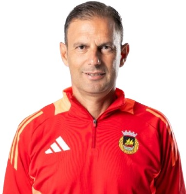
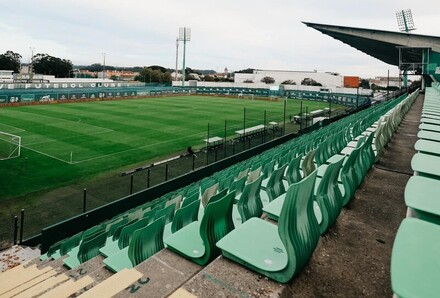

Treinador: Sotiris Sylaidopoulos
A trajetória de Hugo Oliveira é definida por uma transição magistral do detalhe técnico para a liderança de elite, afirmando-se como um treinador de perfil metódico, comunicador e de vincada capacidade de comando.

Estádio: Arcos
O Estádio Municipal 22 de Junho ergue-se como um baluarte da identidade de Famalicão, pautado por uma mística minhota invulgar e uma proximidade orgânica entre a bancada e o relvado, afirmando-se como um recinto de perfil vibrante, fervoroso e resiliente.

Estilo de Jogo:
O estilo de jogo de Sotiris Alexandropoulos no Rio Ave caracteriza-se por uma forte presença física no meio-campo, focando-se na pressão agressiva, na recuperação de bola e na transição rápida para o ataque através da sua capacidade de transporte vertical.
"Muito mais do que um clube, uma cidade!"